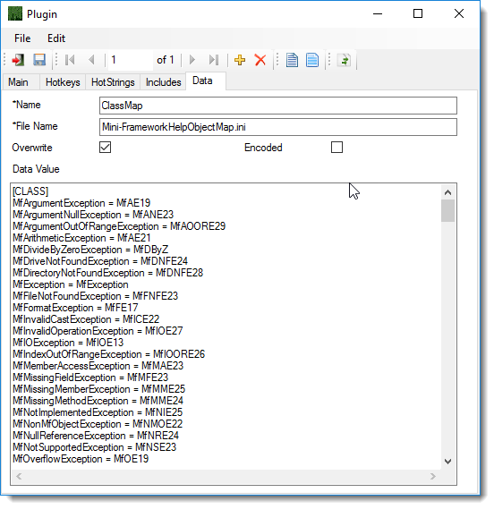

Data can be use for any type of file that can be consumed by a Hotstring, Hotkey or Include. such as an ini file
Data Folder will be accessible in your code via a super global AS_AppDatapath.
AS_AppDatapath will always point to the Data folder for the current Profile.

In figure 1 the file name is Min-FrameworkHelpObjectMap.ini.
To Access this file in your code you would use MyIniFile := AS_AppDatapath . "\Min-FrameworkHelpObjectMap.ini"